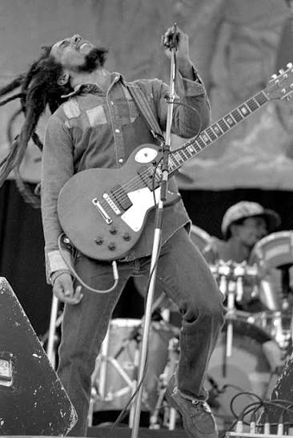

Bob Marley (1945 – 1981)
O eterno Rei do Reggae nasceu no interior da Jamaica. Sofreu muito preconceito na infância até se mudar para o subúrbio de Trenchtown, em Kingston, onde a cena cultural pulsava. Foi lá que formou o The Wailers na década de 1960.
Marley não apenas popularizou o ritmo mundialmente, mas tornou-se o grande embaixador do movimento Rastafari e um símbolo global de resistência. Em 1976, sobreviveu a uma tentativa de assassinato por motivos políticos, exilando-se na Inglaterra, onde gravou o lendário álbum Exodus.